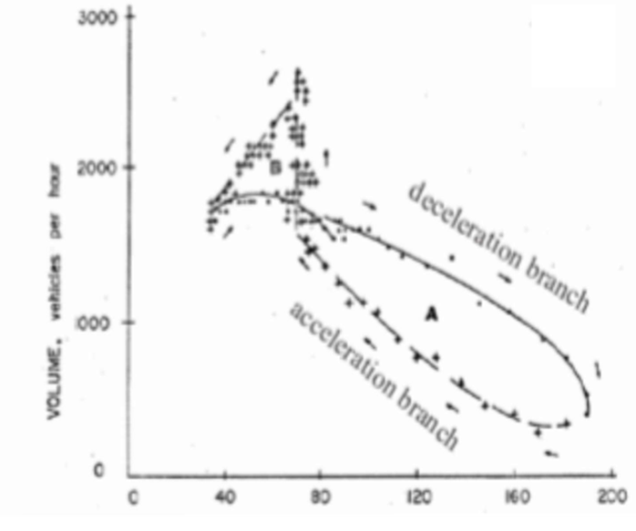

交通流理论的若干模型(上)
1. 交通流理论概述
- 交通流理论: 用数学与物理描述交通行为.
- 发展过程:
- 创始阶段: 流速密关系模型. 如 Greenshields.
- 快速发展阶段: 排队论, 跟驰模型. 如 Wardrop.
- 稳定发展阶段: 网络理论, 人工智能. 如 Herman.
2. 交通流参数与特性
基本参数
基本参数含: 交通流量, 车头时距, 速度(分为时间平均与空间平均), 车头间距, 密度, 占有率.
- 两种速度的关系:
- uˉt=uˉs+uˉsσs2.
- uˉs=uˉt−uˉtσt2.
- uˉtuˉs=σt2σs2.
- 证明: 利用定义 uˉt=∑qi∑qiui,uˉs=∑ki∑kiui.
- 累积曲线: 可用可导的光滑曲线 N~(t) 进行近似.
- q≈dtdN~(t).
- 累积曲线必须单增.
- 到达/离去曲线: 在 N−t 图上表示出 到达数 A(t) 与 D(t).
- 同一时间两者之差 Q(t) 表示排队长度.
- 同一车辆数两者之差 W(n) 表示延误.
- 面积 ∫Q(t)dt 表示累积排队总长.
交通流参数调查
- 浮动车法: q=ta+twx+y,tˉ=tw−qy.
- 证明: 分别写出正向净超越车辆数与逆向所遇车辆数. (利用 N=kΔu⋅t)
- 基本图: Q-K-V关系.
- Greenshields公式下, K-V与Q-K均呈线性关系.
- 实际情况下, 常在Q-K图的最高点观察到流量的断崖式下降, 称为breakdown.
- 在拥堵发生时, 由于inflow>outflow, 将产生速度的回滞现象.

- 某些分析中, 也会使用三角形的Daganzo基本图.
3. 跟驰模型
- 条件: 单车道, 限制超车.
- 研究对象: 后车随前车的速度变化. 有如下特性:
GM模型
线性模型
两车间距满足: s(t)=Xn(t)−Xn+1(t)=d1+d2+L−d3. 其中:
- d1: 反应时间的行驶距离. d1=X˙n+1(t+T)⋅T
- d2: 后车制动距离.
- d3: 前车制动距离. (一般认为性能相同, d2=d3)
- L: 制动后的安全距离.
令 λ=T1, 求导得到:
X¨n+1(t+T)=λ[X˙n(t)−X˙n+1(t)]
- 意义: 反应=灵敏度×时间.
- 缺点: 两侧对时间积分, 将得到 Q∝K, 与实际情况不符.
非线性模型
注: 积分初条件为 k=0,u=uf 与 u=0,k=kj 及 u=um,k=km.
- 车头间距平方倒数模型:
- λ=[Xn(t)−Xn+1(t)]2λ1.
- 带入解微分方程可得 u=uf(1−kjk), 即Greenshields模型.
- 车头间距倒数模型:
- λ=Xn(t)−Xn+1(t)λ2.
- 解微分方程可得 u=umlnkkj, 即Greenburg模型.
- 正比车速的平方倒数模型:
- λ=[Xn(t)−Xn+1(t)]2λ3X˙n+1(t+T).
- 解微分方程得 u=ufe−kmk, 即Underwood模型.
- 一般模型:
- X¨n+1(t+T)=α[Xn(t)−Xn+1(t)]lX˙n+1m(t+T)[X˙n(t)−X˙n+1(t)].
- 模型的缺点:
- 认为速度差为0时, 加速度不会产生.
- 某些情况下, 后车速度为0时加速度也为0, 不会再次启动.
安全间距模型
- Gipps模型: 认为前后两车保持一定间距, 不会相撞.
智能驾驶员(IDM)模型
- 定义 "社会力" 的存在, 并分为动力与阻力.
- 在车辆间距计算中, 没有包含车长.
注: 其他模型: Vissim软件中使用的心理学跟驰模型. 通过前车在驾驶员中视角的变化来决定驾驶员反应.